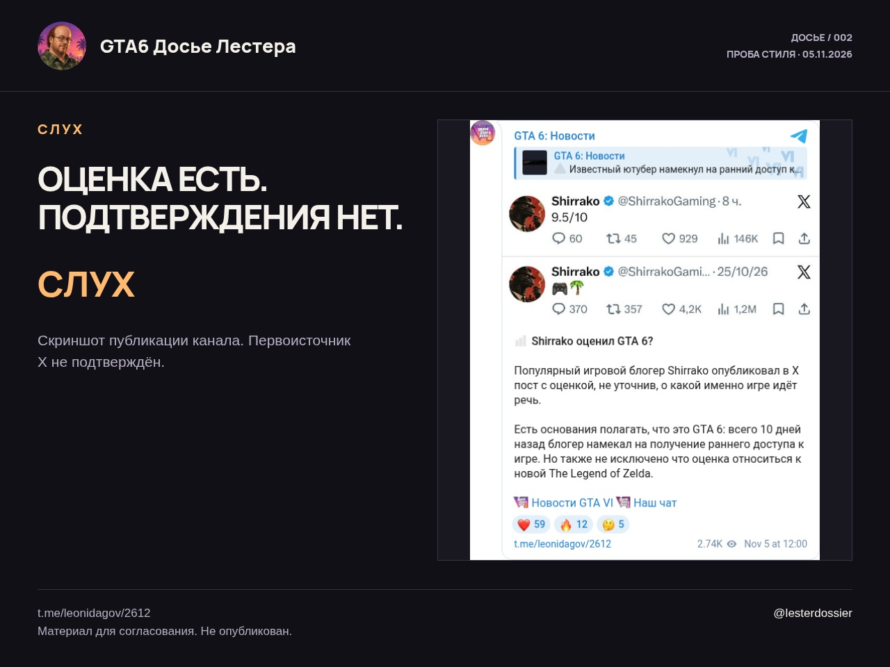
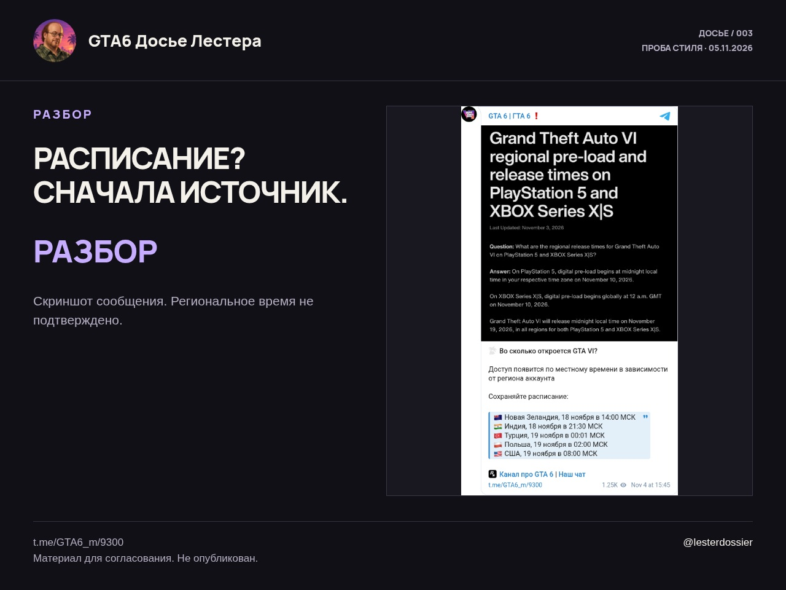

Три образца редакции
Согласование стиля · 5 ноября 2026 · ничего не опубликовано.
Предзагрузка раньше ограбления

**ПРОВЕРЕНО · Предзагрузка раньше ограбления**
На официальной странице GTA VI указано: предзагрузка начинается 10 ноября, выход игры — 19 ноября 2026 года.
Не путай загрузку файлов с доступом к игре. Сейф привезли — это ещё не значит, что тебе выдали код.
https://www.rockstargames.com/VI
@lesterdossier
_Образец стиля от 5 ноября 2026. Не опубликован._
Оценка есть. Названия игры нет

**СЛУХ · Оценка есть. Названия игры нет**
Канал @leonidagov связывает публикацию Shirrako с оценкой игры с GTA 6. Сам канал признаёт: блогер не уточнил, какую игру оценивает.
Что оценка относится к GTA 6, не подтверждено. Прямой ссылки на исходный пост X в этой публикации нет.
Удобная теория. Только доказательства опять опаздывают.
https://t.me/leonidagov/2612
@lesterdossier
_Образец стиля от 5 ноября 2026. Не опубликован._
Часы в репосте — ещё не расписание

**РАЗБОР · Часы в репосте — ещё не расписание**
@GTA6_m публикует время открытия GTA VI для разных регионов. Ссылки на страницу магазина или объявление Rockstar в этом посте нет.
На официальной странице проверяется дата выхода: 19 ноября 2026 года. Региональные часы из репоста оставляем неподтверждёнными.
Сохранить табличку легко. Обосновать её — работа посложнее.
https://t.me/GTA6_m/9300
https://www.rockstargames.com/VI
@lesterdossier
_Образец стиля от 5 ноября 2026. Не опубликован._